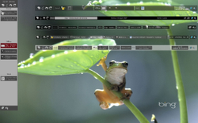
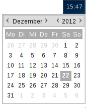

tint2
Dieser Artikel wurde für die folgenden Ubuntu-Versionen getestet:
Ubuntu 16.04 Xenial Xerus
Ubuntu 14.04 Trusty Tahr
Zum Verständnis dieses Artikels sind folgende Seiten hilfreich:
 Fast jede grafische Oberfläche verwendet ein Panel – meist eine Zeile am oberen und/oder unteren Bildschirmrand, mit der zwischen laufenden Anwendungen gewechselt werden kann. Im Regelfall ist auch ein Informationsbereich am rechten Rand enthalten, der mindestens eine kleine Uhr enthält.
Fast jede grafische Oberfläche verwendet ein Panel – meist eine Zeile am oberen und/oder unteren Bildschirmrand, mit der zwischen laufenden Anwendungen gewechselt werden kann. Im Regelfall ist auch ein Informationsbereich am rechten Rand enthalten, der mindestens eine kleine Uhr enthält.
tint2  ist ein besonders kleiner, ressourcenschonender und vielseitiger Vertreter, der sich perfekt für den Einsatz mit alleinstehenden Fenstermanagern eignet, die kein eigenes Panel enthalten. Als Beispiel soll Openbox dienen. Aber auch ein Einsatz unter GNOME ist möglich.
ist ein besonders kleiner, ressourcenschonender und vielseitiger Vertreter, der sich perfekt für den Einsatz mit alleinstehenden Fenstermanagern eignet, die kein eigenes Panel enthalten. Als Beispiel soll Openbox dienen. Aber auch ein Einsatz unter GNOME ist möglich.
|  |
| 6 verschiedene tint2-Panels |
Funktionen:
Taskleiste (Fensterliste)
Benachrichtigungsfeld
Uhr
Batterieanzeige
Ein Menü und Anwendungsstarter sind nicht enthalten. Ein interessanter Ansatz ist das Konzept, die virtuellen Arbeitsflächen direkt im Panel darstellen zu können. Eine Übersicht zu weiteren Panels ist im Artikel Desktop zu finden.
Installation¶
 Das Programm kann über das folgende Paket installiert [1] werden:
Das Programm kann über das folgende Paket installiert [1] werden:
tint2 (universe)
 mit apturl
mit apturl
Paketliste zum Kopieren:
sudo apt-get install tint2
sudo aptitude install tint2
Anschließend kann das Programm testweise über den Befehl [2] [3]:
tint2
gestartet werden (siehe auch Verwendung). Beenden kann man tint2 wieder mit Strg + C .
Konfiguration¶
 Alle Einstellungen erfolgen über die Datei ~/.config/tint2/tint2rc [4], die automatisch beim ersten Programmstart erstellt wird. Im Ordner /usr/share/doc/tint2/examples/ sind einige Beispieldateien enthalten, die man kopieren und bei Bedarf ändern kann. Eine ausführliche Beschreibung (inkl. Beispielen) erläutert die verschiedenen Optionen.
Alle Einstellungen erfolgen über die Datei ~/.config/tint2/tint2rc [4], die automatisch beim ersten Programmstart erstellt wird. Im Ordner /usr/share/doc/tint2/examples/ sind einige Beispieldateien enthalten, die man kopieren und bei Bedarf ändern kann. Eine ausführliche Beschreibung (inkl. Beispielen) erläutert die verschiedenen Optionen.
Für die eingangs erwähnte Darstellung aller Programme (auf allen virtuellen Arbeitsflächen) im Panel dient folgende Konfiguration  :
:
#--------------------------------------------- # TASKBAR #--------------------------------------------- taskbar_mode = multi_desktop taskbar_padding = 0 0 0 taskbar_background_id = 1
Mit dem Befehl:
killall -SIGUSR1 tint2
wird das Programm anschließend neu gestartet.
tint2conf¶
Das grafische Werkzeug tint2conf gehört seit Ubuntu 15.04 zum Installtionsumfang und erleichtert das Aktualisieren oder Austauschen der Konfigurationsdateien. Es wird im Terminal mit dem Befehl:
tint2conf
gestartet. Das Layout aller im Verzeichnis ~/.config/tint2/ vorhandenen Dateien (*.tint2rc) wird angezeigt. Durch Klick auf den grünen Haken werden die Änderungen in ~/.config/tint2/tint2rc gespeichert und somit übernommen. Durch "Edit -> Refresh" wird die vorgenommene Änderung angezeigt.
Alternativ können Änderungen vorgenommen werden, indem die entsprechenden Dateien mit einem Texteditor [4] bearbeitet werden.
Verwendung¶
Prinzipiell werden die Einstellungen aus ~/.config/tint2/tint2rc verwendet. Man kann aber mit
tint2 -c DATEINAME
auch eine andere Datei angeben. Dies ist insbesondere dann praktisch, wenn man zwei (oder mehr) Instanzen des Programms starten möchte.
Autostart¶
Da ein Panel in der Regel automatisch bei der Anmeldung gestartet werden soll, muss man sich mit den Autostart-Funktionen der jeweiligen Desktop-Umgebung bzw. des eingesetzten Fenstermanagers vertraut machen. Die verschiedenen Möglichkeiten sind dem Artikel Autostart oder der Beschreibung des verwendeten Fenstermanagers zu entnehmen. Zusätzlich stellt die Projektseite Beispiele für GNOME 2 (MATE), Openbox und Fluxbox zur Verfügung.
Benachrichtigungsfeld¶
Das Benachrichtigungsfeld (Systray) ist eine zentrale Komponente der Taskleiste und am rechten Rand des Panels untergebracht (ganz rechts befindet sich die Uhr bzw. die Batterieanzeige). Hier sind die Programmsymbole von beispielsweise Pidgin, Skype oder des Network-Managers zu finden, sobald diese gestartet wurden. Wichtig ist in diesem Zusammenhang, dass das Systray nur funktioniert, wenn keine andere Anwendung diese Funktion übernimmt. Die Meldung beim Programmstart (in einem Terminal-Fenster):
tint2 : another systray is running
weist auf diese Situation hin.
Da tint2 außer einer Uhr und einer Batterieanzeige keine eigenen Miniprogramme (Applets) mitbringt, ist evtl. folgende Liste hilfreich:
|  |
| Uhrzeit mit Kalender (gsimplecal) |
Startmenü:
ClassicMenu Indicator
 (nur in Kombination mit Unity)
(nur in Kombination mit Unity)Root-Menü (Kontextmenü
 ) des jeweiligen Fenstermanagers nutzen (Beispiel)
) des jeweiligen Fenstermanagers nutzen (Beispiel)
Arbeitsflächenumschalter (Pager):
taskbar_mode = multi_desktop(siehe oben)Zwischenablage (Clipboard):
Lautstärkeregler:
Klebezettel (Notizen): Xpad
Kalender: Osmo, Orage, gsimplecal
Tipps & Tricks¶
Automatisch verbergen¶
Man fügt der ~/.config/tint2/tint2rc Folgendes hinzu:
#--------------------------------------------- # AUTOHIDE OPTIONS #--------------------------------------------- autohide = 1 autohide_show_timeout = 0.3 autohide_hide_timeout = 2 autohide_height = 2 strut_policy = follow_size
und startet das Programm neu. Nach 2 Sekunden (autohide_hide_timeout = 2) wird das Panel ausgeblendet.
Uhr mit Kalender¶
Um die Uhr um einen Kalender zu erweitern, benötigt man gsimplecal :
gsimplecal (universe)
mit apturl
Paketliste zum Kopieren:
sudo apt-get install gsimplecal
sudo aptitude install gsimplecal
Um den Kalender in tint2 einzubinden, bearbeitet man die Datei ~/.config/tint2/tint2rc, wo man den Abschnitt "CLOCK" um zwei Zeilen ergänzt:
clock_lclick_command = gsimplecal prev_month clock_rclick_command = gsimplecal next_month
Wer Openbox als Fenstermanager einsetzt, ergänzt noch folgenden Abschnitt in der Datei ~/.config/openbox/rc.xml:
1 2 3 4 5 6 7 8 9 10 11 12 13 14 15 16 17 18 19 | <applications> <!-- ... --> <application class="Gsimplecal"> <focus>yes</focus> <position force="yes"> <x>-0</x> <y>0</y> </position> <decor>no</decor> <shade>no</shade> <layer>above</layer> <iconic>no</iconic> <skip_pager>yes</skip_pager> <skip_taskbar>yes</skip_taskbar> <fullscreen>no</fullscreen> <maximized>no</maximized> </application> <!-- ... --> </applications> |
Zum Aktivieren ab- und wieder neu anmelden. PS: die Kalenderanzeige wird mit
Esc beendet (unter Umständen den Kalender vorher mit einem Linksklick  auswählen).
auswählen).
Openbox¶
Beim Fenstermanager Openbox wird folgender Eintrag in der Datei autostart.sh empfohlen:
DISPLAY=:0.1 openbox & DISPLAY=:0.1 tint2 &
Links¶
Wiki
- DokumentationBugtracker
- Fehlerberichte
Der Weg von
LXDELubuntu zu einem reinen Openbox-Desktop mit Tint2 und Conky - Blogbeitrag 02/2012Tint2 - ein Panel mit neuen Ideen
- Blogbeitrag, 02/2010Conky - wird gerne als Ergänzung genutzt
- Erstellt mit Inyoka
-
 2004 – 2017 ubuntuusers.de • Einige Rechte vorbehalten
2004 – 2017 ubuntuusers.de • Einige Rechte vorbehalten
Lizenz • Kontakt • Datenschutz • Impressum • Serverstatus -
Serverhousing gespendet von